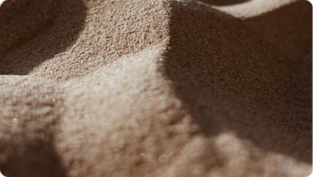
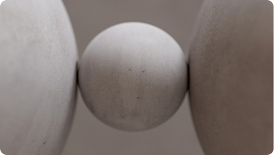
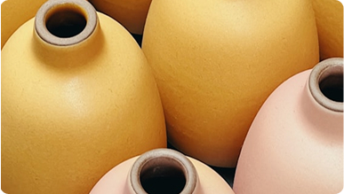
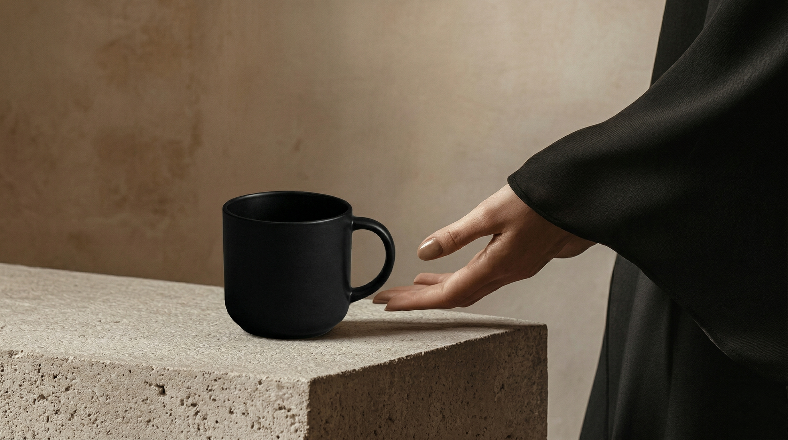

하루의 분위기를 만드는 도자 오브제
THE BEGINNING OF LOAMO
LOAMO는 바쁜 일상 속에서 잠시 멈추는 순간을 위해 시작되었습니다.
손에 닿는 도자기의 질감과 조용한 형태를 통해
일상의 순간을 더 깊게 느낄 수 있는 오브제를 만듭니다.
-
Material
재료
도자기 고유의 질감과 자연스러운 형태를 존중합니다.

 Natural
Natural- Soft
- Texture
자연의 감각을 담은 소재와 부드러운 질감, 그리고 표면의 결을 담아냅니다. 흙이 지닌 고유의 성질을 그대로 살려 꾸밈없는 질감과 깊이를 전달합니다.
-
BALANCE
균형
과한 장식보다 편안한 곡선과 안정적인 비율을 지향합니다.

- Curves
- Minimal
- Detail
부드러운 곡선과 미니멀한 형태, 그리고 섬세한 디테일을 담아냅니다. 균형과 여백을 통해 자연스럽게 어우러지는 형태와 안정감을 만들어냅니다.
-
MOMENT
순간
순간과 일상을 채우는 오브제로 일상에 깊이감을 더합니다.

- Feeling
- Time
- Mood
감정과 시간의 흐름, 그리고 차분한 분위기를 담아냅니다. 과하지 않은 감각과 균형을 통해 자연스럽게 스며드는 순간의 깊이와 여운을 만들어냅니다.
OBJECTS FOR QUIET MOMENTS
조용한 오후의 차 한 잔처럼 LOAMO의 오브제는
일상의 순간을 편안하고 따뜻한 분위기로 채웁니다.

Slow Objets
For Every Moments
LOAMO는 빠르게 지나가는 하루 속에서 잠시 멈추는 작은 순간을 위해 일상에 자연스럽게 어울리는 오브제를 만듭니다.
LOAMO의 오브제는 바쁜 하루 속에서
잠시 멈추는 순간을 위해 만들어집니다.
따뜻한 차를 따르는 시간,
조용한 식탁 위의 장면처럼
평범한 하루의 작은 순간들이
조금 더 깊게 느껴지도록 합니다
우리는 일상의 풍경 속에 자연스럽게 어우러지는
물건을 만듭니다.
특별한 날이 아닌
매일 반복되는 일상을 위해